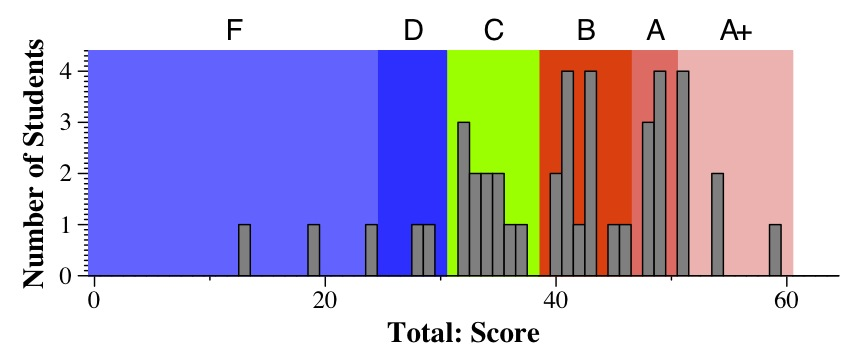
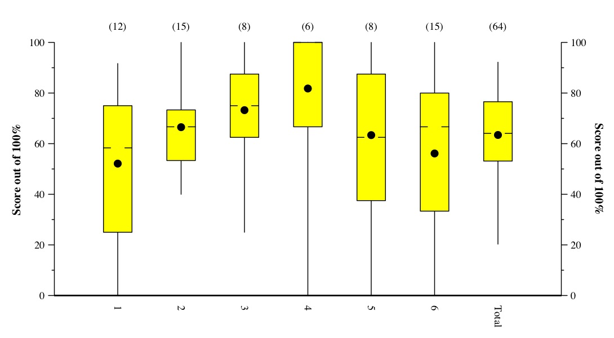

CS140 Final Exam: Spring, 2012
Scores
A straightforward exam. Letter grades:
A+ 51 61
A 47 51
B 39 47
C 31 39
D 25 31
F 0 25
- 51 - 60: A+
- 47 - 51: A
- 39 - 47: B
- 31 - 39: C
- 25 - 31: D
- Below 25: F

Tukey Plots:
Lines go to min & max. The box is from the first quartile to the third quartile.
The hash marks denote the median. The dot denotes the mean.
